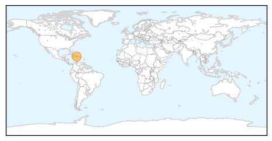
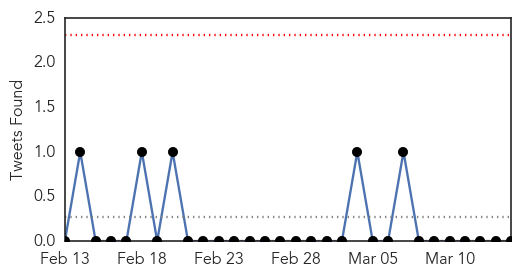

Cholera
30-Day Web Trend
3 alerts, 4 warnings

30-Day Twitter Trend
0 alerts, 0 warnings

Article Locations
Article Confidences

Top Articles:
Top Tweets:
-
No tweets found for Mar 14, 2014
Influenza
30-Day Web Trend
0 alerts, 0 warnings
30-Day Twitter Trend
0 alerts, 0 warnings

Article Locations
Article Confidences

Top Articles:
- 0.994
- New Cambodian bird flu cases highlight regional risk
- 0.975
- Severe flu likely to hit Western Australia, doctors warn
- 0.970
- Severe flu warning for people in WA after long, hot summer
- 0.955
- Soc Trang tackles bird flu outbreak
- 0.952
- Suspected AI infection found in dog
- 0.929
- Why expanding flu vaccination is good public policy
- 0.652
- Norovirus, or stomach flu, kills some 800 each year in the U.S.
Top Tweets:
-
No tweets found for Mar 14, 2014